機率分布
簡介
在程式設計領域，「設計模式」是一些經常被使用到的物件樣式，而在數學領域，也同樣存在著某些「常見模式」，在機率統計領域，這些「常見模式」就是機率分布。
機率分布可以分為「離散型」與「連續型」兩類，離散型的機率分布通常只會有整數型的值，而連續型的機率分布則在整個實數軸上都可能產生樣本。
伯努力試驗 (Bernoulli trial)
所有的離散型機率分布，幾乎都是從「伯努力試驗」這個概念開始的，讓我們先來瞭解一下何謂「伯努力試驗」。
伯努利試驗是一項只有兩種可能結果的隨機試驗，可以用下列機率分布描述：
換句話說、伯努力試驗是一種 YES or NO (1 or 0) 的試驗。舉例而言，像是「丟銅版、生男生女、一地區某天最高溫是否超過 30 度、擲骰子是否超過 2 點」等等，都可以用伯努力實驗描述。
伯努力試驗的概念很簡單，以下是一些範例：
範例 1 :
丟一個公正銅板，用隨機變數 X 將正面映射為 1 ，反面映射為 0，那麼就可以用 P[X=1]=0.5, P[X=0]=0.5 表示這個機率模型。
在 R 軟體中， Sample 函數可以用來模仿柏努力試驗。
舉例而言，以下是範例一的丟銅板試驗，指令 sample(0:1, 10, replace=T, prob=c(0.5,0.5)) 代表連續進行 10 次柏努力試驗，成功失敗機率各為 0.5。
> sample(0:1, 10, replace=TRUE, prob=c(0.5,0.5))
[1] 1 0 1 1 0 1 0 1 0 1
> sample(0:1, 10, replace=T)
[1] 0 1 1 1 0 0 1 1 1 0說明：X(反面)=0, X(正面)=1, 第一個參數 0:1 分別代表 {反面、正面} 的映射結果，而第二個參數代表只投擲一次，第三個參數 replace 代表樣本取後是否放回，這在頭銅板的範例必須用 replace=TRUE, 因為這次投正面之後不代表下次不能再出現正面，而 prob 則是指定的機率分布，如果不指定則代表採用平分的機率分布，以這個例子就是各為 0.5 的方式。
範例 2 :
假如用機率描述生男生女這件事， X({生男})=1, X({生女})=0, 且生男生的機率為 0.53, 生女生的機率為 0.47，那麼就可以用 P[X=1]=0.53, P[X=0]=0.47 表示這個機率模型。
> sample(0:1, 10, replace=T, prob=c(0.47, 0.53))
[1] 0 1 1 0 1 1 0 1 1 0二項分布 (Binomial distribution)
如果我們進行 n 次的伯努力試驗，每一次的實驗都可以用隨機變數描述， P(ti=1) = p, P(ti=0)=1-p ，而且這些試驗 {t1, t2, ...., tn} 之間是獨立的，那麼我們就可以用二項分布來描述 n 次實驗的可能機率分布。
由於這 n 次實驗相互獨立，假如 (t1 t2 ... tn) 代表這個實驗的一個可能出像，因此 P(t1 t2 .... tn) = P(t1) P(t2) .... P(tn)。
令 X 代表一個可以將 (t1 t2 ... tn) 映射到伯努力試驗成功 (Yes) 次數的函數，那麼、n 次實驗中出現 k 次 1 的機會，可以用以下算式表示。

舉例而言，投擲公正銅板 5 次，得到 3 次正面的機率為 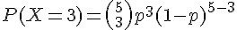 ，其中 p=0.5。
範例：
假如生男生的機率為 0.53, 生女生的機率為 0.47，而且每位母親生男生女的事件之間都是獨立的。
某母親 A 想要生 3 個小孩，請問至少有一個男生的機會為多少。
用機率描述生男生女這件事， X({生男})=1, X({生女})=0, 那麼可以計算至少生一個男生的機率如下：
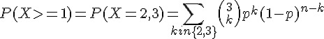 ，其中 p = 0.53, (1-p) = 0.47。
讓我們用 R 軟體計算一下
> dbinom(1, 3, 0.53)+dbinom(2,3, 0.53)+dbinom(3,3,0.53)
[1] 0.896177
> sum(dbinom(c(1,2,3), 3, 0.53))
[1] 0.896177
> x=c(1,2,3)
> x
[1] 1 2 3
> p=dbinom(x, 3, 0.53)
> p
[1] 0.351231 0.396069 0.148877
> sum(p)
[1] 0.896177二項分布的圖形
> par(mfrow=c(2,2))
> x = 0:5
> b5 = dbinom(x, 5, 0.5)
> plot(x, b5, type="h")
> b3 = dbinom(x, 5, 0.3)
> plot(x, b3, type="h")
> b7 = dbinom(x, 5, 0.7)
> plot(x, b7, type="h")
> b1 = dbinom(x, 5, 0.1)
> plot(x, b1, type="h")
習題
- 請問丟 10 個公平的銅板，有三個正面的機會是多少？
- 請問丟 n 個公平的銅板，正面次數 <= k 的機率是多少？
- 請問丟 10 個公平的銅板，得到正面次數的期望值為何？
幾何分布 (Geometric distribution)
如果我們連續進行一系列的伯努力試驗，直到成功才停止，那麼我們需要進行多少次實驗呢？
關於這種「直到成功才停止」的問題，可以用幾何分布來描述，以下是幾何分布的定義。
舉例而言，假如我們連續投擲公正銅版，直到出現正面才停止，那麼我們需要投擲 k 次才會得到第一個正面的機率，就會是 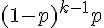 ，其中的 p=0.5。
範例：
假如生男生的機率為 0.53, 生女生的機率為 0.47，而且每位母親生男生女的事件之間都是獨立的。
某位母親決定要一直生小孩，直到有一個女孩為止，請問她在生小孩個數不大於三個就能完成任務的機率為多少？
用機率描述生男生女這件事， X({生女})=1, X({生男})=0, 那麼就可以累加下列算式以計算結果。
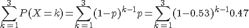
讓我們用 R 軟體計算一下，必須注意的是，R 軟體中的幾何分布 dgeom 的定義為  ，也就是用失敗次數當 x，因此其公式與上面的有所不同，必須修改如下：(其中的 x 代表失敗次數)。
，也就是用失敗次數當 x，因此其公式與上面的有所不同，必須修改如下：(其中的 x 代表失敗次數)。

> dgeom(0, 0.47)
[1] 0.47
> dgeom(1, 0.47)
[1] 0.2491
> sum(dgeom(c(0,1,2), 0.47))
[1] 0.851123習題
請問丟公平的銅板時，得到第 1 次正面時投擲次數 k 的機率分布為何？該分布的期望值為何？
請問丟公正的骰子時，得到第 1 次 6 點時投擲次數 k 的機率分布為何？該分布的期望值為何？
負二項分布
如果我們對「幾何分布」進行擴充，改成「持續進行試驗直到取得 r 次成功為止」，那麼其機率分布又該如何描述呢？
這樣的機率分布就稱為負二項分布，其公式如下：
舉例而言，假如我們連續投擲公正銅版，直到出現三次正面才停止，那麼我們需要投擲 k 次才會得到第一個正面的機率，就會是 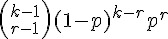 ，其中的 p=0.5。
讓我們用 R 軟體計算一下，必須注意的是，R 軟體中的負二項分布 dbinom 的定義為 Γ(x+n)/(Γ(n) x!) p^n (1-p)^x ，也就是用 n=r, x=k-r-1 的代換方式。
其中的 x 同樣代表失敗次數，而 n 代表成功次數，Γ(n) 代表排列數，所以 Γ(x+n)/(Γ(n) x!) 其實也就是 (x+n-1)!/((n-1)! x!) ，也就是 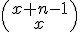 的意思。
R 的操作範例
> dnbinom(0, 3, 0.5)
[1] 0.125
> dnbinom(1, 3, 0.5)
[1] 0.1875
> dnbinom(0:10, 3, 0.5)
[1] 0.125000000 0.187500000 0.187500000 0.156250000 0.117187500 0.082031250
[7] 0.054687500 0.035156250 0.021972656 0.013427734 0.008056641
> n=3
> x=1
> p=0.5
> gamma(x+n)/(gamma(n)*prod(1:x)) * p^n * (1-p)^x
[1] 0.1875
> choose(x+n, n) * p^n * (1-p)^x
[1] 0.25
> choose(x+n-1, x) * p^n * (1-p)^x
[1] 0.1875範例：
假如生男生的機率為 0.53, 生女生的機率為 0.47，而且每位母親生男生女的事件之間都是獨立的。
某位母親決定要一直生小孩，直到有三個女孩為止，請問她在生小孩個數不大於 5 個就能完成任務的機率為多少？
用機率描述生男生女這件事， X({生女})=1, X({生男})=0, 那麼就可以累加下列算式以計算結果。
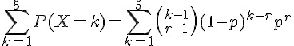 , 其中 p=0.47, r=3。
但是由於 R 是用失敗次數
> dnbinom(3, 3, 0.47)
[1] 0.1545686
> dnbinom(4, 3, 0.47)
[1] 0.122882
> p=dnbinom(c(3,4,5), 3, 0.47)
> p
[1] 0.15456857 0.12288201 0.09117845
> sum(p)
[1] 0.368629負二項分布的圖形
> par(mfrow=c(2,2))
> nb5 = dnbinom(x, 5, 0.5)
> plot(nb5, type="h")
> nb7 = dnbinom(x, 5, 0.7)
> plot(nb7, type="h")
> nb2 = dnbinom(x, 5, 0.2)
> plot(nb2, type="h")
> nb9 = dnbinom(x, 5, 0.9)
> plot(nb9, type="h")
布瓦松分布 (Poisson distribution)
在離散機率分布當中，布瓦松分布算是相當特別的一個，因為「布瓦松分布」是描述「連續區域內出現幾個樣本」的分布。舉例而言，像是舀一瓢水會撈到的草履蟲數量，或者抽一滴血會抽到的白血球數量等等。
布瓦松分布的公式如下所示，其中的  代表每單位區域內會出現的樣本平均數。
代表每單位區域內會出現的樣本平均數。
要瞭解布瓦松分布，得從二項分布的極限開始想起，以下是三種不同 參數的布瓦松分布圖：

事實上、布瓦松分布是二項分布在 n 趨近無限大的極限情況。

圖、布瓦松分布是二項分布 n 趨近無限大的極限情況
來源：http://en.wikipedia.org/wiki/File:Binomial_versus_poisson.svg
{kind=link}
為了說明布瓦松分布與二項分布之間的關係，讓我們用以下的白血球範例來看看隱藏在這兩個分布背後的關係：
範例：抽血時白血球數量的問題
問題： 假如現在從你身上抽一滴血，請回答下列兩個問題。
- 請定義一個隨機變數 X 代表那滴血中的白血球數量。
提示： 樣本空間 S = 此時此刻你身上的所有白血球 = {w1,w2,......,wn}
- 請算出一滴血液中有三顆白血球的機率，假設該滴血液占你總血量的 1/1000。
解答 1：
X(A) = |A|
說明：
A 是一個事件，也就是白血球的樣本空間 S 的子集合，例如： A = {w1, w5, w9}
|A| 代表 A 集合的大小，也就是元素個數，舉例而言：
如果 A = {w1, w5, w9} ，那麼 |A| = 3
如果 B = {w2, w8}，那麼 |B| = 2
如果 C = {}，那麼 |C| = 0
如果 D = S，那麼 |D| = n
解答 2：
P(X=3) = P({A | X(A) = 3}) = P({{w1, w2, w3}) + P({w1, w2, w4}) + ......
假如任一顆白血球被抽到的機率等於該滴血液佔全身血液的比率，由於該滴血液佔總血量的 1/1000，所以給顆白血球被抽到的機率為 1/1000。
而且假設這些白血球沒有智慧，也不會聚合在一起，因此相互之間獨立，那麼由於每顆白血球被抽到的機率為 1/1000，因此 P(w1) = P(w2) = .... P(wn) = 1/1000。
那麼初步想法是 P(w1w3) = P(w1) * P(w3) = 1/1000 * 1/1000 。
但是上述的想法有個小問題，那就是該情況代表其它白血球都沒被抽到，因此所謂的 P(w1w3) 真正的意思應該是
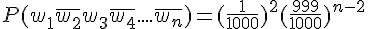所以 P(X=3) 應該算法如下：
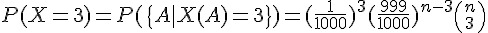推而廣之，P(X=k) 的機率之算法如下：

事實上，這個題目的機率分布就是下一章的二項分布，如下所示：

而且、當 n 趨近於無限大時，這個分布將會趨近於布瓦松分布，如下所示：
其中的 λ 之意義為，在單位時間 (或單位面積、體積) 內，事件的出現次數平均為 λ 次。
習題
習題：假設每 1CC 的血所含的白血球平均為 10 顆，那麼請問你抽 1CC 的血時，抽到 8 顆白血球的機率是多少。
解答：
λ = 10，因此布瓦松分布為 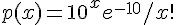 ，將 x=8 代入，得到 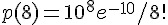
其數值可以用 R 軟體計算，如下所示：
> ?dpois
> dpois(8, 10)
[1] 0.112599
> 10^8*exp(-10)/prod(1:8)
[1] 0.112599布瓦松分布的圖形
> par(mfrow=c(2,2))
> x = 0:10
> p3 = dpois(x, lambda=3)
> plot(p3, type="h")
> p7 = dpois(x, lambda=7)
> plot(p7, type="h")
> p1 = dpois(x, lambda=1)
> plot(p1, type="h")
> p5 = dpois(x, lambda=5)
> plot(p5, type="h")
均勻分布 (Uniform distribution)
均勻分布的圖形
> dunif(0.5)
[1] 1
> dunif(0.9)
[1] 1
> dunif(2)
[1] 0
> dunif(-1)
[1] 0
> par(mfrow=c(2,2))
> x=0:10
> curve(dunif(x, min=0, max=1), from=-1, to=11)
> curve(dunif(x, min=0, max=10), from=-1, to=11)
> curve(dunif(x, min=3, max=6), from=-1, to=11)
> curve(dunif(x, min=2, max=9), from=-1, to=11)
常態分布 (Normal Distribution)
常態分布的圖形
> dnorm(0)
[1] 0.3989423
> dnorm(0.5)
[1] 0.3520653
> dnorm(2.5)
[1] 0.0175283
> par(mfrow=c(2,2))
> curve(dnorm(x, mean=0, sd=1), from=-10, to=10)
> curve(dnorm(x, mean=0, sd=5), from=-10, to=10)
> curve(dnorm(x, mean=5, sd=1), from=-10, to=10)
> curve(dnorm(x, mean=-3, sd=3), from=-10, to=10)
附件：離散型機率分布表格整理
以下是離散型機率分布的匯總表格，讀者現在還看不懂的話沒有關係，我們在後文中會解說其中較重要的幾個分布。
| 離散機率模型 | 密度函數 | R 函數名稱 | 說明 |
|---|---|---|---|
| 二項分布 |  |
binom(n:size, p:prob) | n:樣本數, p:正面機率, n 次試驗中有 x 個成功的機率 |
| 多項分布 |  |
multinom(n:size, p(1..k):prob) | n:樣本數, p[1..n]:各項的機率 |
| 負二項分布 |  |
nbinom(size, prob) | x:樣本數, , p:正面機率, 要得到第 r 次成功所需要的試驗次數 |
| 幾何分布 |  |
geom(p:prob) | p: 成功機率, 第一次成功所需要的試驗次數 |
| 超幾何分布 |  |
hyper(N:m,n:n,r:k) | m:白球數量, n:黑球數量, k:抽出球數, 同二項分布，但取樣後不放回 |
| 布瓦松分布 |  |
pois(lambda) | k:期望值,  , , 在 s 時間內，事件出現平均 k 次 |
附件：連續型機率分布表格整理
以下是連續型機率分布的匯總表格，讀者現在還看不懂的話沒有關係，我們在後文中會解說其中較重要的幾個分布。
| 連續機率模型 | 密度函數 | R 函數 | 說明 |
|---|---|---|---|
| 均勻分布 (Uniform) |  |
unif(a:min, b:max) | a:範圍下限, b: 上限 出現機會均等 |
| 常態分布(Normal) |  |
norm(mean, sd) | 中央極限定理：x1+x2+...+xk; 當 k 越大就越接近常態分布 |
| 伽瑪分布 (Gamma) |  |
gamma(shape, rate = 1, scale = 1/rate) |  指數分布與卡方分布都是 Gamma 分布的特例 |
| 指數分布 (Exponential) |  |
exp(rate) | 伽瑪分布(  ) ) 布瓦松過程中，第一次事件出現的時間 W |
| 卡方分布 (Chi-Square) |  |
chisq(df, ncp) | 伽瑪分布(  ) ) 利用樣本推斷母體變異數 |
| 柯西分布 (Cauchy) |  |
cauchy(b:location, a:scale) | |
| 威布爾分布 (Weibull) |  |
weibull(a:shape, b:scale) |  可靠度工程：f(x) 失敗時間, R(t) 可靠度,  失敗率 失敗率 |
| T 分布 (T) |  |
t(df, ncp) | 估計變異數時使用的分布 |
| F 分布 (F) |  |
f(df1, df2, ncp) | 等變異數 F 檢定時使用 |
| 貝塔分布 (Beta) | beta(a:shape1, b:shape2, ncp) | ||
| 對數常態分布 (Log Normal) | lnorm(meanlog, sdlog) | ||
| 邏輯分布 | logis(location, scale) | ||
| Signrank | signrank(n) | ||
| 威爾斯 | wilcox(m, n) | a,b 為兩組樣本 |